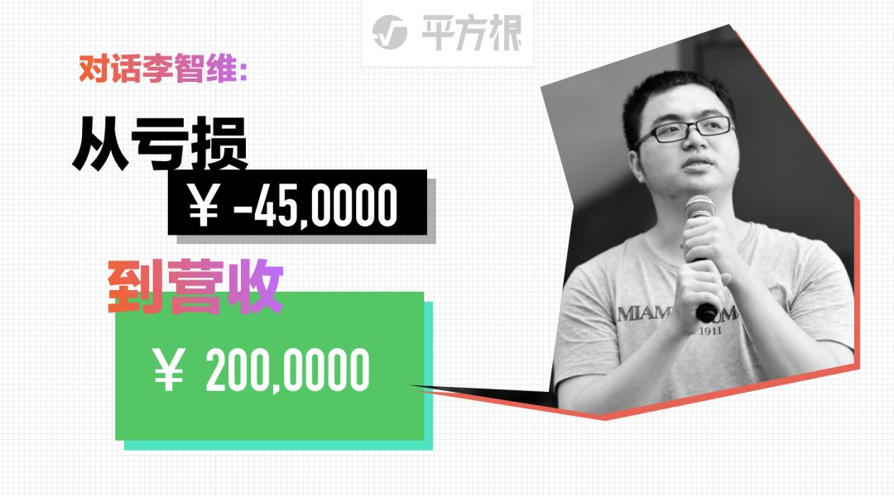

De 450 000 de pertes à 2 millions de revenus | Original, traduit par l'IA

Le jeune entrepreneur Li Zhiwei, qui avait l’habitude de publier au moins un message par jour sur son fil d’actualités WeChat et de mettre à jour régulièrement les notifications de son compte public, n’a plus rien posté depuis plusieurs mois. L’année dernière, à 22 ans, il était très actif et visible. Début de cette année, des internautes ont commenté qu’il n’était plus si jeune et qu’il devrait se concentrer sur des réalisations concrètes. Il a trouvé que les internautes avaient raison. Maintenant âgé de 23 ans, il a commencé à adopter un profil plus discret.
Cette année, il a fait la transition d’une plateforme de diffusion en direct axée sur la technologie vers le développement de logiciels en sous-traitance, marquant ainsi un nouveau départ. Il offre désormais à ses clients des services complets de conception et de développement, les aidant à réaliser des mini-programmes, des applications mobiles, des sites web, des produits d’intelligence artificielle et des solutions basées sur la blockchain. Parmi ses clients en sous-traitance logicielle figurent plus de 20 entreprises, dont l’entreprise éducative licorne Xiaoyuan Souti, la plateforme d’éducation en ligne pour les concours publics Fenbi, et la startup d’intelligence artificielle Zhongke Shituo, pour lesquelles il a achevé plus de 40 projets variés.
Depuis que l’entreprise s’est reconvertie dans la sous-traitance logicielle, au premier semestre 2018, le chiffre d’affaires a dépassé 2 millions de yuans, avec un bénéfice supérieur à 500 000 yuans. Le nombre d’employés à temps plein et à temps partiel a récemment atteint 15. Bien que ces chiffres soient modestes, cette année a été marquée par une croissance significative, de nouvelles compréhensions et de nouvelles expériences.
Aujourd’hui, Li Zhiwei s’ouvre à nouveau à tous, et nous avons mené l’interview suivante.

Émission "The Brain" de Jiangsu TV
Application officielle "Burn Your Brain"
Collaboration avec l'agence de design Lan Shi Media
Fourniture de services complets de conception et développement au client
Le projet a été autorisé par le client pour être présenté
Question : Pourquoi pensez-vous que votre externalisation est nécessaire ?
Li Zhiwei : Premièrement, lorsqu’ils ont un projet en main et une idée à tester, s’ils devaient recruter une équipe entière, dans un contexte où le coût de recrutement d’ingénieurs est élevé, faire appel à une externalisation est souvent une solution plus économique.
Nos tarifs sur le marché tendent à être relativement abordables, donc l’un des avantages de travailler avec nous est que c’est économique, et un autre est la flexibilité. Si vous souhaitez embaucher un ingénieur à temps plein, vous devez le garder en permanence, et vous ne pouvez pas simplement les licencier après la mise en ligne d’un projet. En tant que travailleurs temporaires fiables, nous répondons à un véritable besoin.
Ensuite, certaines grandes entreprises avec lesquelles nous collaborons nous confient également des projets en sous-traitance. Pourquoi ? Parce que si vous avez un excellent partenaire de sous-traitance, que vous savez qu’ils sont fiables et qu’ils fournissent un travail de qualité, comme s’ils faisaient partie de l’entreprise, il arrive parfois que l’entreprise n’ait pas les ressources internes pour mener à bien un projet. Dans ce cas, vous choisissez de confier le projet à un partenaire de sous-traitance de confiance.
Le coût interne est souvent très élevé, avec des salaires d’ingénieurs atteignant vingt à trente mille yuans. En revanche, notre approche d’externalisation est beaucoup plus économique. Pourquoi nos coûts sont-ils plus bas ? Une des raisons est que nous utilisons un système de rémunération basé sur la répartition des projets, ce qui nous permet de mieux exploiter les talents. Nous pouvons confier à une seule personne les tâches techniques front-end et back-end, ce qui nécessiterait trois personnes dans d’autres entreprises. Cette personne reçoit alors un salaire double.
Par exemple, pour embaucher trois ingénieurs, cela coûterait 60 000 yuans, mais si je donne à un seul ingénieur 40 000 yuans, il fera tout le travail tout seul, il sera très content, et nous économiserons de l’argent. De cette façon, nous réduisons également les coûts de communication, et parfois, cela peut être plus efficace que d’avoir deux ou trois personnes.
Cependant, dans une entreprise, cela est impossible. Il y aura des personnes très compétentes qui pourraient faire tout ce travail, mais ce serait trop épuisant et cela n’entraînerait pas d’augmentation de salaire. Ainsi, si un ingénieur s’occupe du backend, une autre personne doit s’occuper du frontend. Le système de motivation dans l’entreprise est le suivant : chaque personne reçoit un certain montant par mois, que je m’occupe uniquement du backend ou que je fasse tout, je reçois la même somme. Par conséquent, l’ingénieur n’a pas la motivation de faire un travail aussi pénible.

Application WeChat "Ai Da Chu"
Collaboration avec la société Ai Da Chu
Aide au développement du frontend de l'application
Le projet a été autorisé par le client pour être présenté
De plus, une partie de nos ingénieurs travaille à temps partiel, et leur rémunération est donc un peu inférieure à celle des employés à temps plein. Dans certaines entreprises, il y a des postes qui ne nécessitent pas beaucoup de travail, mais ils doivent quand même maintenir ces ingénieurs à temps plein et leur verser un salaire mensuel complet. Chez nous, en revanche, les salaires sont calculés en fonction du volume de travail. Un projet peut être terminé en deux semaines, donc nous payons en fonction de ces deux semaines de travail. Ensuite, nos ingénieurs sont des personnes très sérieuses. Ils occupent des postes à temps plein dans de grandes entreprises, et en travaillant à temps partiel chez nous, ils peuvent gagner un ou deux mille euros de plus par mois, ce qui les rend très heureux. Mais si nous devions embaucher à temps plein, les salaires des bons ingénieurs à Pékin commencent désormais à plus de 2 000 euros par mois.
En même temps, lorsqu’on collabore avec de grandes entreprises, elles ont souvent de nombreuses personnes en charge des relations, alors que chez nous, une seule personne peut interagir avec trois à cinq personnes de leur côté. Je me souviens encore de ma première aventure entrepreneuriale avec Quzhibo, où je faisais tout seul. À cette époque, l’entreprise pouvait encore être rentable, car je m’occupais à la fois de la promotion et du code. Bien que les bénéfices n’étaient pas énormes, avec un chiffre d’affaires mensuel de seulement quelques dizaines de milliers de yuans et un bénéfice d’un ou deux mille yuans, j’avais accumulé un nombre considérable d’utilisateurs. Si l’on tient compte de la valeur des utilisateurs, en réalité, j’étais plutôt rentable.
C’est pourquoi j’ai compris très tôt que plus une entreprise compte de personnes polyvalentes, capables de tout faire, et pouvant accomplir de nombreuses tâches à elles seules, mieux elle peut survivre. Une personne qui peut à la fois faire des tests, rédiger des textes, s’occuper du marketing et même de la vente. Dans une petite entreprise, on a besoin de personnes relativement polyvalentes, capables de s’occuper de toutes les tâches. Une personne peut occuper plusieurs postes, et une autre peut également occuper plusieurs postes, il faut remplir complètement le temps de chaque personne. S’il est chargé des tests, faites-le travailler toute la journée sur des tests, qu’il ait toujours du travail. S’il est en charge des ventes, faites-le vendre toute la journée. Lorsque les tâches de vente sont moins nombreuses, faites-le également participer aux tests.
D’après mon expérience personnelle, il est vraiment difficile de gagner votre salaire. À l’époque, je pensais aussi que mes compétences étaient bonnes, après tout, je venais d’une grande entreprise internet. Lorsque j’ai lancé mon entreprise, grâce à mon réseau dans le milieu, j’ai pu inviter des gens à faire des lives, mais il m’a quand même fallu six mois pour atteindre un chiffre d’affaires mensuel de 30 000 à 40 000 yuans, avec un bénéfice de 10 000 à 20 000 yuans.
J’ai déjà utilisé pas mal de ressources, mais je n’ai gagné qu’un peu d’argent. Cela montre que, pour gagner de l’argent, à mon avis, il faut vraiment faire beaucoup d’efforts. Dans notre entreprise, j’ai beaucoup donné, tout comme mes collègues, et même les entreprises très performantes travaillent dur. Par exemple, chez Alibaba et Huawei, leurs ingénieurs doivent souvent faire des heures supplémentaires, c’est pourquoi ils gagnent beaucoup d’argent.
Question : Dans le processus de sous-traitance, quel aspect trouvez-vous le plus difficile à gérer ?
Li Zhiwei : Le défi de l’augmentation de la taille de l’entreprise. Nous avons travaillé sur un projet de quiz en direct, qui était notre première expérience en tant qu’ingénieurs en sous-traitance. À l’époque, nous ne participions qu’à un seul projet, ce qui nous permettait de bien le gérer. Mais plus tard, lorsque le nombre de projets a augmenté, par exemple à 10 projets, il était impossible de les gérer de la même manière que pour un seul projet. On ne pouvait pas tout gérer seul, il fallait déléguer à d’autres, on ne pouvait pas participer à chaque projet de bout en bout. Ainsi, il y a eu des défis liés à l’augmentation du nombre de projets et à l’expansion de l’échelle.
Chacun est différent, et il n’y a pas de moyen de faire en sorte que les chefs de projet agissent exactement selon votre façon de penser ou votre manière de faire les choses. Même un chef de projet sans aucune formation technique pourrait rencontrer d’autres problèmes, comme la manière de communiquer avec les clients, etc. Il est impossible qu’ils disent chaque mot exactement comme vous le souhaiteriez. Alors, comment faire pour que les autres agissent comme vous le feriez vous-même ? J’ai progressivement réalisé qu’il est impossible de contrôler cela à 100 %.

Application mini-programme "Grand Dictionnaire de Chinois"
En collaboration avec la société de design Lan Shi Media
Fourniture de services complets de conception et de développement au client
Le projet a été autorisé par le client pour être présenté
Nous avons donc progressivement établi un certain processus pour que l’ensemble des opérations reste sous mon contrôle. Par exemple, pour un projet, nous communiquons avec le client, élaborons une carte mentale, analysons les points clés du projet, établissons un devis, puis discutons de la collaboration avec le client. Au cours de ce processus, j’ai réalisé qu’au niveau de la gestion, il n’est pas nécessaire d’être aussi méticuleux, il suffit de se concentrer sur les résultats. Par exemple, lorsque le commercial discute d’un projet avec un client, il ne faut pas s’inquiéter de la manière dont il répond à chaque question du client, mais plutôt voir s’il a réussi à conclure l’affaire ou non, et si ce n’est pas le cas, comprendre la raison. Nous devons nous concentrer sur les questions les plus importantes.
En résumé, le défi consiste à passer d’une situation où je dirigeais deux ou trois personnes sur un seul projet, à une équipe de vingt à trente personnes travaillant simultanément sur une dizaine de projets. La question est de savoir comment structurer les processus de l’entreprise et offrir la meilleure expérience possible aux clients, tout en s’assurant que, même avec l’expansion de l’entreprise, chaque employé puisse continuer à offrir une expérience client aussi exceptionnelle que celle qu’un fondateur pourrait fournir.
Question : Avez-vous des projets pour l’avenir ?
Li Zhiwei : Passer de la gestion simultanée de 10 projets à celle de 30 ou 40 projets est une question que je me pose constamment. Il est essentiel de mettre en place des processus plus standardisés, à l’image d’une production en chaîne.
Dans notre entreprise, une partie des ingénieurs sont à temps plein, tandis qu’une autre partie travaille à temps partiel. Nous prévoyons de continuer sur cette voie à l’avenir, en recrutant davantage d’ingénieurs à temps partiel plutôt que de n’embaucher que des employés à temps plein. Cette approche présente de nombreux avantages.
Prenons un exemple exagéré de 10 000 projets, il s’agit essentiellement de faire correspondre les informations. Nous agissons en tant que plateforme d’information, donc ce ne sont pas nous qui écrivons réellement le code, mais nous savons et pouvons trouver des ingénieurs qui écrivent bien. Une partie du travail central est effectuée par des ingénieurs à temps plein que j’ai recrutés. De plus, le travail de conception influence la progression du développement ultérieur, donc je m’efforce de confier ces tâches à des employés à temps plein. Pour d’autres travaux, comme le développement de l’interface web, des applications clientes ou de la gestion backend, je pourrais engager des ingénieurs à temps partiel.
À l’avenir, avec une expansion encore plus grande, il sera impossible de tout faire nous-mêmes, d’écrire tout le code nous-mêmes. Ce que nous devons faire, c’est de faire correspondre les informations, de trouver ces ingénieurs qui ont des prêts immobiliers, des pressions, et qui sont relativement disponibles, prêts à travailler à temps partiel. Cependant, les entreprises clientes ne connaissent pas ces informations et n’ont pas les coordonnées de ces personnes. Par conséquent, notre rôle est de mettre en relation ces ingénieurs avec les entreprises clientes pour qu’ils puissent travailler pour elles.
Prenons l’exemple de Taobao. Les produits ne sont pas fournis par Taobao lui-même. Une de ses compétences clés est le matching d’informations, c’est de là qu’il tire ses revenus, et c’est grâce à cela qu’il a pu devenir une grande plateforme. Si Taobao peut bien gérer le matching d’informations pour 10 000 commerçants, alors nous pouvons également bien gérer le matching d’informations pour 10 000 projets.
Lorsque le nombre de projets augmente, nous mettons en place un système de gestion interne. Les progrès, les responsables et les membres de chaque projet, jusqu’à 10 000 projets, seront intégrés dans ce système. Ainsi, la situation de tous les projets sera clairement visible dans le système. De plus, il suffira de collaborer avec le chef de projet de chaque projet pour effectuer une supervision légère, sans avoir à gérer chaque membre individuellement.

Mini-programme "TogoCareer拼课"
Le projet a été autorisé par le client pour être présenté
Si nous rencontrons des situations où certains chefs de projet ne sont pas adaptés, par exemple, le projet pourrait ne pas être réalisé de manière satisfaisante. Dans ce cas, nous intervenons pour superviser et permettre un remplacement rapide du personnel. Ce processus nous permet également de déterminer quelles équipes et quelles personnes sont fiables. Nous établissons des relations étroites et durables avec ces personnes fiables, qu’elles soient à temps plein ou à temps partiel.
Un autre plan consiste à accepter davantage de projets relativement petits, d’une valeur de 50 000 à 80 000 yuans, qui peuvent être gérés par deux ou trois ingénieurs. Pour ces projets de plus petite envergure, nous sommes confiants que même en cas d’échec total, nous pourrons réaliser un bénéfice suffisant pour les refaire ou compenser avec les bénéfices d’autres projets. Parallèlement, nous croyons qu’avec plus de projets, nous pourrons accumuler davantage de clients et ainsi nous développer.
Réponse : Il est vrai que je suis actuellement en charge de la gestion et de la coordination, et je dois m’occuper de presque tout. Il y a effectivement des moments où je suis débordé, mais je m’efforce toujours de fournir le meilleur service possible à mes clients. Si jamais je sens que je ne peux pas répondre à leurs attentes, je n’hésite pas à demander de l’aide ou à déléguer certaines tâches pour m’assurer que la qualité du service reste élevée. La satisfaction de mes clients est ma priorité absolue.
Li Zhiwei : La situation actuelle est la suivante : nous sommes trois à gérer tous les projets, et nous en avons environ dix en cours. Environ la moitié des projets sont gérés par des ingénieurs très proactifs, ce qui ne nécessite pratiquement pas de temps de gestion. Seule l’autre moitié, soit environ cinq projets, nécessite un suivi plus actif. Pour l’instant, nous arrivons à gérer la charge de travail.
Bien sûr, tout en gérant les projets, nous devons également discuter de nouveaux projets, ce qui nous rend souvent très occupés. Dans ces moments-là, nous établissons des priorités et nous nous concentrons d’abord sur le service aux clients qui ont déjà conclu des contrats. Pour les clients potentiels encore en négociation, nous faisons de notre mieux pour les satisfaire. Lorsque la pression devient trop importante, nous envisageons d’augmenter notre effectif.
Nous allons progressivement mettre en place une structure organisationnelle plate. À la base, il y a les personnes qui écrivent le code et conçoivent l’interface utilisateur, puis les responsables d’équipe, et enfin, au sommet, la direction. Cela forme une structure organisationnelle à trois niveaux.
Question : Vous avez mentionné précédemment que certains ingénieurs, designers, etc., travaillent à temps partiel. Comment les avez-vous trouvés ?
Li Zhiwei : Au début, nous avons créé Quzhibo, une plateforme de streaming technique qui proposait également des cours sur le design, entre autres. Cette plateforme de streaming comptait environ 30 000 ingénieurs et designers du secteur de l’internet. J’ai ajouté près d’un tiers d’entre eux sur WeChat et j’ai discuté de leurs parcours. Certains travaillaient dans de grandes entreprises comme JD.com ou Alibaba, ainsi que dans diverses start-ups.
Lors de nos précédentes discussions et des interactions sur les réseaux sociaux, ils ont appris à me connaître et ont découvert que nous faisions actuellement de l’externalisation. Ils ont donc envisagé de collaborer avec nous. Peu à peu, ils ont trouvé que les bénéfices étaient intéressants et ont finalement rejoint notre équipe à temps plein.
Les relations entre les personnes se développent progressivement. Par exemple, commencez par lui demander s’il peut aider à résoudre un problème technique, puis proposez-lui 2000 yuans pour occuper un de ses week-ends, et enfin offrez-lui 20 000 yuans pour utiliser un mois de son temps en freelance. Ainsi, vous établissez progressivement une collaboration plus étroite.
Vous pouvez également demander à des amis proches qui sont bien informés s’ils connaissent des ingénieurs à proximité qui cherchent un travail à temps partiel et qui sont compétents. N’hésitez pas à poser des questions, essayez autant que possible, vous finirez par trouver quelqu’un. Ensuite, il s’agit de rémunérer leur travail, établir une première collaboration, et progressivement, une collaboration à long terme.
Nous avons actuellement une trentaine à quarantaine de personnes avec qui nous pouvons collaborer à tout moment. J’ai probablement contacté encore plus de personnes, et beaucoup se sont également manifestées. Parfois, il est dommage de ne pas se souvenir de certains amis avec qui nous n’avons pas collaboré, car ils sont également très talentueux. Ensuite, nous avons discuté en détail avec une cinquantaine à soixante personnes, et au cours de ce processus, nous avons effectué une sélection, éliminant une dizaine de personnes qui n’étaient pas tout à fait adaptées en raison de problèmes de prix ou de temps. Nous avons donc retenu les trente à quarante personnes actuelles avec qui nous avons collaboré, dont dix à vingt avec qui nous avons travaillé à plusieurs reprises.

Jeu blockchain FOMOO
Le projet a été autorisé par le client pour être présenté
Question : Les clients viennent-ils essentiellement de cette manière également ?
Li Zhiwei : Oui, c’est exact. Auparavant, lorsque je gérais une plateforme de streaming en direct, je partageais mon WeChat avec tous les utilisateurs. En ajoutant mon WeChat, ils pouvaient être invités dans un groupe pour discuter directement avec les streamers des conférences techniques. Ils ont ajouté mon WeChat, ont découvert que j’étais le fondateur de cette plateforme, et ont vu dans mon fil d’actualités des informations sur les streams ainsi que des histoires sur l’équipe et la plateforme.
Quels que soient les amis WeChat qui viennent me poser des questions ou autres, je prends toujours le temps de répondre. De plus, je ne bloque pratiquement personne sur mon fil d’actualités, et je like les contenus intéressants que je vois, en adoptant une attitude ouverte pour communiquer. C’est très important. Au début, quand on n’a rien, on peut choisir de se faire de nombreux amis et de les solliciter de temps en temps pour faire quelque chose ensemble.
Il est difficile de garantir que l’on ne créera qu’un seul produit dans une vie, et l’entrepreneuriat peut aussi connaître des échecs, mais il est essentiel d’accumuler ses propres utilisateurs et clients. Prenons mon exemple : après avoir rempli deux comptes WeChat avec des amis, il est possible qu’une petite partie d’entre eux me supprime après un certain temps, mais il reste encore cinq à six mille personnes qui continuent à me suivre, et mes publications sur le fil d’actualité peuvent recevoir jusqu’à quatre ou cinq cents likes. Ce sont des amis que j’ai accumulés au fil du temps.
Il y a quelque temps, j’ai discuté avec un ami d’une chose intéressante : le nombre de vos amis, que ce soit 100, 1000 ou 5000, est essentiellement le même. Du point de vue de gagner de l’argent, cela ne fait aucune différence, car vous ne gagnez pas d’argent avec eux. Auparavant, lorsque je faisais du streaming sur Quzhibo, j’écrivais mon propre code, je faisais de la publicité, et je faisais tout cela seul. Ils étaient simplement des utilisateurs du streaming, et en fin de compte, c’était toujours moi qui gagnais de l’argent, ce qui était très fatigant. Mais si vous collaborez avec 100 ou 5000 personnes pour gagner de l’argent, cela sera très différent.
Ainsi, vous devez vous assurer que vos contacts WeChat sont soit vos collègues, soit vos clients, afin de pouvoir collaborer étroitement avec 10, 50, voire 100 personnes. Par exemple, Jack Ma a des dizaines de milliers de personnes qui exécutent ses idées, ainsi que des millions de commerçants sur sa plateforme. C’est pourquoi Jack Ma collabore avec tant de personnes et gagne énormément d’argent.
Les amis sur WeChat ne se mesurent pas en quantité, mais en qualité et en la proximité de leur collaboration avec vous. Actuellement, je m’efforce de collaborer avec autant de personnes que possible, de poser des questions lorsque je ne comprends pas quelque chose, et d’établir des liens avec des personnes talentueuses. C’est ainsi que les clients viennent progressivement, car nous évoluons tous dans le cercle d’Internet. Ils proviennent soit de mon cercle d’amis, soit d’une recommandation d’un ami dans ce cercle.
Cela dépend bien sûr de ce que vous faites. Si vous êtes un scientifique, vous n’avez besoin que de quelques partenaires pour mener des recherches et rédiger des articles. Il vous suffit de bien faire votre travail et de maîtriser les technologies clés. En revanche, si vous entreprenez, vous pourriez avoir besoin de l’aide de nombreuses personnes.
Cela est également lié à la personnalité individuelle. Par exemple, moi, je ne me sens pas fatigué en discutant avec beaucoup de gens, j’aime me faire plus d’amis et je suis curieux envers les autres. C’était déjà le cas depuis le lycée, à l’époque du collège, je connaissais la plupart des garçons de mon année.
Faire ce que l’on aime et ce pour quoi on est doué rend les choses moins fatigantes. Pour certains, discuter avec des milliers de personnes pourrait sembler fastidieux, mais pour moi, rencontrer des gens différents et apprendre à les connaître est une expérience enrichissante. J’ai commencé à élargir mon cercle social dès mon plus jeune âge, et cela est devenu une habitude au fil des années. De plus, ayant une formation en programmation, je peux dire que la direction entrepreneuriale d’une entreprise de sous-traitance logicielle me convient parfaitement. Pour entreprendre, il faut d’abord se concentrer sur ce que l’on maîtrise et exploiter ses points forts.
Question : Avec autant d’amis, comment fais-tu pour rester en contact avec eux ou pour qu’ils continuent à te suivre ?
Li Zhiwei : Je suis une personne assez ouverte, je n’ai pas de secrets, j’aime beaucoup la sensation de franchise. Même des choses comme les affaires de cœur, certaines difficultés rencontrées, ou des aspects de ma vie, je les partage. Vous verrez que la plupart des gens ne parlent de ces choses qu’à quelques bons amis ou à des personnes proches. Mais si vous en parlez à tout le monde, ces personnes vous comprendront mieux, vous vous ferez des amis avec tout le monde, et du point de vue de gagner de l’argent, les chances augmentent considérablement.
Non seulement pour les entrepreneurs, cette habitude peut également être utile pour les personnes exerçant d’autres professions. Par exemple, certains scientifiques tiennent également leurs propres blogs, etc. À notre époque, élargir son influence, ouvrir son cœur pour communiquer avec les autres et partager son travail est une excellente chose.
Question : La plupart de vos clients proviennent de vos nombreux contacts WeChat. Comment les avez-vous transformés en clients ? Comment les avez-vous convaincus de vous confier leurs projets ?
Li Zhiwei : C’est très simple. D’après ce que je comprends du fonctionnement des micro-marchands, ils développent leur clientèle en étant constamment présents sur les réseaux sociaux, en publiant des relevés de transferts, etc. L’idée est d’abord de faire savoir à tout le monde que je fais ça, donc si vous voulez me contacter pour cela, envoyez-moi un message privé, je suis disponible à tout moment. Vous remarquerez que certains vendeurs de voitures d’occasion, par exemple, changent directement leur nom WeChat en “Voiture d’occasion + numéro de téléphone”, c’est très direct, cela signifie : “Venez, appelez-moi à tout moment.”
En fait, notre canal actuel est WeChat, et c’est la même chose pour d’autres canaux comme les comptes publics. Tout d’abord, il faut que l’annonce soit vue ou que notre annonce soit vue. Soit nous prenons l’initiative de demander, de publier des annonces, soit nous voyons dans les moments des amis ou ailleurs des demandes comme “Quelqu’un connaît-il une équipe d’externalisation ?”, ou nous voyons les annonces des autres. C’est donc un processus de correspondance d’informations. Soit nous voyons passivement cette information, soit nous publions activement une telle information qui est vue par d’autres. Petit à petit, de plus en plus de gens en prennent connaissance, et les affaires arrivent.
En plus de participer activement à des événements et de réseauter, je reçois également des projets par le biais de contacts indirects ou par des ingénieurs avec qui j’ai déjà collaboré. Parfois, ce sont des amis qui me recommandent des projets, et je leur offre une commission en retour, ce qui permet de créer un canal stable de recommandations. De plus, d’anciens clients me recommandent à d’autres ou reviennent pour de nouveaux projets. Ces projets sont basés sur une relation de confiance établie, ce qui facilite la fidélisation des clients et permet de conclure rapidement les affaires.
Réponse : Si un client régulier est satisfait de notre collaboration, nous envisagerons certainement une coopération à long terme. Nous apprécions grandement les relations de confiance et les partenariats durables, et nous nous efforçons toujours de maintenir une communication fluide et une qualité de service élevée pour répondre aux besoins de nos clients.
Li Zhiwei : Bien sûr, et il y en a aussi. Par exemple, pour la licorne de l’éducation, la société Xiaoyuan Souti, nous avons réalisé quelques H5, des mini-programmes, etc., c’est une très bonne relation. Il y a aussi Zhongke Shituo, une entreprise d’intelligence artificielle, pour laquelle nous avons réalisé plusieurs projets liés à l’IA, y compris leur manuel produit que nous avons également fait. Ces deux-là sont des clients relativement importants.
Question : Avec des clients avec qui la collaboration se passe bien, il y en a aussi avec qui c’est moins agréable, n’est-ce pas ? Que se passe-t-il si la collaboration se termine en mauvais termes en cours de route ?
Li Zhiwei : Oui, il y en a eu, mais on ne peut pas vraiment dire que ce soit de la mauvaise collaboration. Par exemple, nous avons travaillé sur un projet de livraison express, et alors que nous avions presque terminé, l’autre partie n’a pas donné de retour en temps voulu et n’a pas vraiment poussé le projet. Il est possible qu’ils se soient concentrés sur d’autres produits ou projets, et finalement, cela n’a pas abouti. Mais ce genre de situation est assez rare.
Par exemple, il y a eu un projet qui présentait des difficultés techniques importantes, recommandé par un ami. Au départ, il avait été convenu de verser un acompte d’environ 5000 pour essayer. Cependant, en commençant à travailler dessus, nous avons réalisé qu’il fallait également décrypter le protocole de WeChat, ce qui augmentait considérablement la complexité technique. Par conséquent, nous avons rendu l’acompte et n’avons pas poursuivi ce projet. Dès le début, il avait été convenu que ce serait un essai, et le client a pu comprendre la situation.
Dans notre projet, nous rencontrons parfois des situations similaires, ainsi que des retards occasionnels, mais il n’y a jamais eu de conflits sérieux ou de tensions importantes.
Question : Si un projet ne se concrétise pas, mais que le client revient plus tard avec un autre projet, le considéreriez-vous toujours comme un partenaire potentiel ?
Li Zhiwei : Oui, je suis plutôt ouvert d’esprit, je supprime rarement des gens de manière proactive. Chaque famille a ses propres difficultés, personne n’est entièrement mauvais. Une personne qui semble très froide aux yeux des autres peut être perçue comme chaleureuse par ses proches et ses amis. Il faut garder une certaine tolérance envers les inconnus.
Il est normal que les clients aient leurs propres considérations, comme vouloir réduire les coûts, par exemple. C’est un peu comme nous, si nous trouvons que certains ingénieurs facturent trop cher, nous pourrions choisir de ne pas collaborer avec eux.
Il est bien sûr positif de pouvoir collaborer, mais même si la collaboration ne se concrétise pas, au moins nous avons essayé. De plus, nous avons établi des liens avec des personnes avec qui nous n’avions aucun lien auparavant, et il y aura toujours des opportunités de collaborer à l’avenir.
Nous avons collaboré avec un client, en lui offrant gratuitement des services préliminaires, comme des analyses fonctionnelles et la création d’un mind map détaillé, etc. Malheureusement, cela n’a pas abouti à un accord, ce qui a entraîné une perte de temps, de ressources humaines et d’énergie considérable. Nous nous sentons vraiment désolés, car le temps est précieux, et malgré tous nos efforts, nous n’avons pas réussi à conclure l’affaire.
Alors, j’ai pensé qu’il serait préférable de discuter d’un prix approximatif avec le client dès le départ. Mais en y réfléchissant plus tard, je me suis rendu compte qu’avant même de signer un contrat avec le client, nous faisions déjà beaucoup de choses pour lui. Le client peut ressentir notre sincérité, contrairement à d’autres entreprises de sous-traitance qui pourraient immédiatement annoncer un prix pour le projet, ce qui pourrait sembler un peu mercantile et calculateur. Nous, en revanche, sans demander de paiement initial, fournissons des cartes mentales, des devis, et consacrons une demi-journée ou une journée entière à servir le client. Nous croyons que cela permet au client de ressentir notre sincérité. Une attitude sincère est toujours réciproque.
En effet, après avoir fonctionné ainsi pendant un certain temps, le taux de conversion des commandes a augmenté. Si la transaction ne se concrétise pas finalement, les clients se sentent également un peu désolés.
Question : Comment évalues-tu une personne ? Selon toi, qu’est-ce qui fait qu’une personne est fiable ?
Li Zhiwei : Je pense qu’une personne fiable est celle qui tient ses promesses. Elle fait tout son possible pour accomplir ce qu’elle a promis, et si elle ne peut pas le faire, elle explique les raisons de manière aussi claire et honnête que possible. En termes de communication, une personne fiable est capable d’exprimer clairement ses idées, d’être transparente et de partager ses véritables pensées. Si un client pense que notre proposition n’est pas adaptée, nous espérons qu’il nous dira sincèrement pourquoi. Nous souhaitons également comprendre les raisons pour lesquelles un ingénieur ou un designer ne souhaite pas travailler sur notre projet. C’est pourquoi j’ai toujours pensé que la sincérité est très importante.
Lorsqu’on parle d’une personne fiable, on peut par exemple vérifier si elle travaille de manière fiable, si elle peut répondre rapidement, et si elle s’efforce de tenir ses promesses. Si c’est la première collaboration, nous signons généralement un contrat. Un contrat est une promesse écrite, bien sûr, il contient également des clauses de sortie, comme en cas d’accident familial, par exemple, qui peuvent nous être signalés en temps opportun.
Une personne fiable est celle qui possède de grandes compétences, travaille rapidement, excelle dans la collaboration avec les autres et tient ses promesses. Une telle personne est considérée comme excellente et digne de confiance. Nous avons collaboré avec de nombreuses personnes, et celles qui sont fiables accomplissent leur travail de manière efficace et rapide, répondent à tout et réagissent rapidement aux messages. Si elles sont réellement occupées ou si un projet présente des problèmes, elles sont capables de le dire ouvertement.
Si vous savez que vous ne pouvez pas faire de promesses à l’autre personne et que vous savez que c’est impossible à réaliser, vous devriez refuser à l’avance. Vous devez exprimer clairement vos véritables sentiments.
Question : Vous avez interagi avec tant de personnes, quelles sont vos réflexions sur les compétences en communication et les relations interpersonnelles au cours de ces six derniers mois ?
Réponse : Au cours des six derniers mois, j’ai appris que la communication efficace repose sur l’écoute active et l’empathie. Il est essentiel de comprendre les besoins et les perspectives des autres avant d’exprimer ses propres idées. De plus, la transparence et l’honnêteté sont des éléments clés pour établir des relations de confiance. Enfin, il est important de rester flexible et ouvert d’esprit, car chaque personne est unique et nécessite une approche adaptée.
Li Zhiwei : Je me rends de plus en plus compte que la collaboration entre les personnes est une forme de convention. Pourquoi y a-t-il de la tromperie ? C’est parce que lorsque quelque chose diffère de la convention précédente, cela engendre de la tromperie. Ainsi, que ce soit avec un partenaire amoureux, avec les parents, ou avec n’importe qui, les relations entre les personnes sont toujours basées sur des conventions. Si vous ne respectez pas ces conventions, les gens seront naturellement mécontents.
Il existe des conventions non écrites, par exemple, si vous demandez de l’aide à quelqu’un et qu’il vous aide, mais que la prochaine fois qu’il vous demande de l’aide, vous refusez, cela montre un manque de gratitude, ce qui est en fait une forme de tromperie. Un autre exemple serait celui d’un couple qui promet de n’aimer que l’autre pendant qu’ils sont ensemble. Si pendant cette période, l’un d’eux tombe amoureux de quelqu’un d’autre, cela constitue une tromperie et une rupture de contrat.
Les parties prenantes, les ingénieurs et nous-mêmes, nous devons tous communiquer clairement sur chaque aspect, combien cela coûtera, et ce que chaque personne doit faire. Il est crucial de clarifier autant de choses que possible dès le début. Si les choses ne sont pas clairement communiquées au départ, et qu’à mi-chemin on découvre qu’il y a beaucoup plus de travail que prévu, sans aucune compensation, cela peut facilement conduire à des conflits. Parfois, il est vrai qu’au début on ne pense pas à tout, donc lorsqu’un problème survient en cours de route, il est possible de s’entendre sur des arrangements supplémentaires pour permettre au projet de continuer.
Après chaque engagement que vous prenez, vous devez le tenir. Si vous ne pouvez pas le faire, alors ne faites pas cette promesse. Il est important d’en informer l’autre partie à l’avance pour éviter qu’elle ne passe beaucoup de temps avec vous, pour finalement découvrir que vous ne pouvez pas tenir votre promesse. Cela doit être évité autant que possible. Expliquez clairement toutes les situations et confirmez autant que possible.
Dans la vie et dans les affaires, je suis tout à fait d’accord avec ce que dit Li Ka-shing. Il a dit : “Comment agrandir une entreprise ? Il faut savoir accepter de perdre.”
Parfois, lorsque nous recherchons des ingénieurs, il y en a certains avec qui nous avons vraiment envie de collaborer, même s’ils facturent un peu plus cher. Dans ce cas, nous acceptons de faire moins de bénéfices au début, juste pour avoir l’opportunité de travailler avec cet ingénieur une fois. Souvent, l’argent, que ce soit quelques dizaines de milliers ou même cent mille, n’est pas vraiment un problème. L’essentiel, c’est que nous réussissions à accomplir ce que nous voulons faire.
Envers nos clients, nous adoptons la même approche : accepter un projet pour un peu moins d’argent, je peux m’en accommoder ; collaborer avec des ingénieurs talentueux, je peux aussi faire quelques concessions.
Pourquoi Li Ka-shing dit-il que pour accomplir de grandes choses, il faut accepter de subir des pertes, et que le secret pour réussir dans la vie réside dans l’acceptation de ces pertes ? Accepter de subir des pertes signifie que, dans de nombreuses situations, alors que la partie A se préoccupe de ses intérêts et que la partie B en fait de même, tout le monde est très calculateur, n’est-ce pas ? Si vous êtes le seul à accepter de subir des pertes, alors vous obtenez l’opportunité de réaliser cette chose. Ensuite, vous travaillez plus dur pour accomplir la tâche, et bien que vous gagniez peut-être un peu moins d’argent, vous obtenez cette opportunité, vous acquérez de l’expérience dans le processus du projet, et vous accumulez de l’expérience en collaborant avec des clients et des ingénieurs de haut niveau.
Par exemple, nous collaborons avec certains ingénieurs qui peuvent être un peu plus chers, mais qui sont très compétents, et nous faisons de notre mieux pour travailler avec eux. Petit à petit, nous avons accumulé un grand nombre d’ingénieurs talentueux, et en même temps, nous avons également de nombreux clients qui nous font confiance. Cela ne signifie-t-il pas que nous pouvons naturellement obtenir de bons prix des deux côtés, ce qui nous permet de réaliser un peu plus de profit ? Les clients sont prêts à payer un peu plus parce qu’ils nous trouvent fiables, et les ingénieurs sont prêts à accepter des tarifs un peu plus bas parce qu’ils considèrent que notre canal est bon. Ainsi, naturellement, nous pouvons vivre de mieux en mieux.
Ainsi, vous découvrirez que plus vous acceptez de perdre, plus vous pouvez collaborer avec de nombreuses personnes et obtenir davantage d’opportunités. L’essence de la perte réside dans le fait que je ne me préoccupe pas des intérêts immédiats, mais que je valorise les avantages à long terme et l’accumulation d’expérience. Je suis prêt à accepter quelques pertes pour le moment.
Notre entreprise et moi-même, au fil des années, avons rarement offensé qui que ce soit. On peut dire que je n’ai presque jamais fait de tort à personne. Lorsque le professeur Xiaolai a investi de l’argent dans mon projet et que j’ai subi des pertes, je les ai récupérées. Actuellement, le compte de l’entreprise dispose de plus de 500 000 yuans, et si une liquidation devait avoir lieu à tout moment, je pourrais lui rendre des comptes sans problème. En ce qui concerne la manière de se comporter avec les autres, je dois être digne de confiance envers toute personne qui m’a donné de l’argent. Plus une personne m’a donné d’argent, plus je dois être digne de sa confiance. Même si quelqu’un ne m’a pas donné d’argent mais m’a aidé, je dois également être digne de sa confiance.
Dans notre entreprise, pour être honnête, nous n’avons jamais rendu qui que ce soit mécontent, embarrassé ou exploité les intérêts de qui que ce soit. Les ingénieurs et les designers n’ont jamais exprimé de mécontentement en collaborant avec nous. Bien que certains projets ne soient pas poursuivis par le client, ce qui signifie que je ne reçois pas le paiement final, je répartis l’argent en fonction du travail accompli par chacun. Parfois, une partie du travail a déjà été effectuée en amont, mais le client n’a pas encore versé d’argent, et dans ce cas, je mets un peu d’argent de ma poche. Parfois, l’argent est limité, et pour que notre collaboration réussisse, je peux gagner un peu moins, je peux accepter de perdre un peu.
Dans nos relations interpersonnelles, il est essentiel de penser à long terme. Nous devons collaborer activement avec des personnes compétentes. Souvent, pour préserver l’intérêt général, il est nécessaire de faire quelques concessions pour que tout le monde se sente à l’aise et soit disposé à collaborer avec vous. Ensuite, en offrant un excellent service à vos clients et en prenant soin de toutes les personnes avec qui vous entretenez des relations étroites et des collaborations solides, je pense que c’est ainsi que l’on se comporte dans la vie. Je n’ai pas un QI émotionnel très élevé, mais en interagissant avec tant de gens, j’ai compris que les principes sont très simples : si vous êtes gentil avec moi, je serai gentil avec vous. Chaque personne, chaque engagement, chaque promesse doit être tenue avec soin, en essayant de penser davantage aux autres. Parfois, lorsque des ingénieurs ont des conflits avec les clients, je joue le rôle de médiateur.
Alors pourquoi être indulgent envers les autres ? Parce qu’après avoir interagi avec tant de gens, on peut comprendre toutes sortes de situations. Par exemple, des amoureux peuvent se supprimer mutuellement de leurs contacts. Ils étaient ensemble, puis quelqu’un a rompu la promesse, et l’autre s’est senti trahi. Alors, ils se sont mutuellement supprimés ou ont fait autre chose. Les relations entre les gens sont parfois fragiles, donc on peut comprendre pourquoi ils se disputent parfois. Tout cela est normal.
Ainsi, dans nos interactions avec les autres, nous devrions toujours penser aux autres. Parfois, il vaut mieux accepter une petite perte personnelle pour préserver l’intérêt général. Il est important de tenir chaque promesse, de clarifier toutes les attentes avant de commencer une collaboration, et de discuter ouvertement de tout désaccord potentiel. Si des problèmes surgissent en cours de route, il est essentiel de prévoir des compensations équitables pour apaiser les tensions. Voilà un peu de ma philosophie personnelle sur la manière de vivre et de traiter avec les autres.
Question : Comment gérez-vous votre entreprise ? Comment bien gérer votre entreprise ?
Gérer une entreprise, en particulier une équipe de développement composée de 20 à 30 ingénieurs et designers, la “transparence” est essentielle. Nous utilisons GitLab, un système de gestion de code, qui me permet de voir toutes les soumissions des ingénieurs, de suivre les progrès de chacun et de comprendre ce que chacun a accompli.
La transparence est essentielle pour que vous puissiez superviser efficacement le travail de chacun. Après tout, il arrive que tout le monde ne soit pas toujours très responsable, et il se peut qu’une personne n’ait vraiment pas le temps de faire ce qu’elle devrait faire. Ainsi, vous pouvez détecter les problèmes à l’avance et intervenir à temps. Par conséquent, la gestion d’une entreprise doit être très transparente, et les responsabilités de chacun doivent être clairement définies.
Les salaires de nos ingénieurs à temps partiel sont tous basés sur une répartition des bénéfices. Nous savons très bien et clairement combien d’argent est alloué à chaque tâche, c’est pourquoi les responsabilités doivent être clairement définies. Pourquoi les entreprises deviennent-elles chaotiques ? Parce que les responsabilités ne sont pas clairement définies, chacun ne sait pas ce qu’il doit faire, et personne n’organise ce que tout le monde doit faire. Nous utilisons un système de gestion de projet externalisé qui gère très bien l’entreprise, et les affaires de l’entreprise sont discutées autant que possible dans les groupes de travail, ce qui permet aux personnes concernées d’être informées en temps réel. C’est ce qu’on appelle la transparence maximale.
Le fondateur de Bridgewater Associates, Ray Dalio, a déclaré : “Il faut rechercher une transparence extrême.”
Pour bien gérer une entreprise, il est essentiel de mettre en place une transparence absolue et de favoriser une communication honnête et sincère, où chacun peut exprimer ses véritables pensées. Ensuite, il faut garder à l’esprit qu’une entreprise est avant tout un lieu de profit. Bien que les relations humaines soient importantes, si vous êtes trop indulgent envers vos subordonnés et vos employés, alors que vos clients sont exigeants et peu conciliants, c’est vous qui devrez assumer toute la pression. Si vos employés subissent peu de pression, en tant que manager, vous en subirez davantage. Il est donc crucial de répartir cette pression sur l’ensemble de l’équipe.
Gérer une entreprise, c’est avant tout avoir des responsabilités claires et bien définies ; ensuite, c’est que tout le monde partage la pression, ce qui rend chacun conscient et proactif dans l’accomplissement de ses tâches. C’est une réflexion que j’ai sur la gestion d’entreprise. Bien sûr, notre envergure est encore petite, mais lorsque nous atteindrons une plus grande échelle, nous aurons sans doute de nouvelles réflexions.
Question : Quels conseils donneriez-vous aux ingénieurs en milieu professionnel ?
Li Zhiwei : J’ai toujours dit qu’il faut être ouvert, essayer davantage et se lancer des défis. Il ne faut pas toujours faire des choses répétitives et simples, cela n’a pas de sens. Un ingénieur ne doit pas se contenter de créer des pages simples et de répéter ces tâches, mais doit continuellement apprendre et maîtriser de nouvelles technologies.
Je me suis rendu compte que ce problème remonte à mes cinq années de compétition de programmation, du collège au lycée, où mon meilleur résultat a été de me qualifier pour le concours provincial. J’ai réalisé que je n’avais pas vraiment appris grand-chose pendant ces cinq années. Pendant ce temps libre, je répétais la résolution de problèmes de programmation simples. De plus, je travaillais seul, sans échanger avec les autres ni apprendre de personnes plus expérimentées.
Réponse : Parlez un peu de vous, de vos modèles ou idoles dans votre vie professionnelle et personnelle.
Dans ma vie professionnelle, je suis inspiré par des figures comme Elon Musk, dont l’innovation et la détermination à repousser les limites de la technologie m’impressionnent. Sa capacité à transformer des idées audacieuses en réalité est une source d’inspiration constante.
Dans ma vie personnelle, je trouve des modèles dans des personnes comme Nelson Mandela, dont la résilience et la capacité à pardonner malgré des épreuves extrêmes sont des leçons de vie inestimables. Son engagement envers la justice et l’égalité m’encourage à être une meilleure personne au quotidien.
Ces figures, bien que très différentes, partagent une qualité commune : leur capacité à avoir un impact significatif sur le monde qui les entoure. C’est quelque chose que j’aspire à faire dans ma propre vie, à ma manière.
Li Zhiwei : Je m’intéresse aux figures emblématiques de notre époque, comme Wang Xing, Cheng Wei et Zhang Yiming de TMD, ainsi qu’à de nombreuses personnalités du monde de l’internet. Je m’intéresse également à des personnalités comme Steve Jobs et Masayoshi Son. Récemment, j’ai lu des livres sur l’histoire de l’humanité et de la Terre, comme “La Lumière de la Civilisation”. En fait, les grands esprits de l’histoire, de l’Antiquité à nos jours, sont des modèles de référence. Je m’intéresse à leurs biographies, leurs œuvres, etc. Mais en réalité, l’essentiel est de pratiquer et de réfléchir par soi-même. Les exemples des autres ne peuvent pas vraiment vous apprendre comment faire.
La personne qui m’a le plus influencé est Paul Graham, le fondateur de Y Combinator, l’un des incubateurs de startups les plus célèbres à l’étranger. C’est en grande partie grâce à lui que j’ai décidé de me lancer dans l’entrepreneuriat, car il encourage vivement les jeunes à créer leur entreprise. J’ai lu et traduit ses articles, étudié en profondeur ses idées et sa façon de penser, en essayant d’intégrer ses concepts dans mon propre esprit. Cependant, beaucoup de choses me restaient encore incompréhensibles, restant simplement au niveau des mots. Les idées des gens sont parfois difficiles à changer, alors j’ai décidé d’agir d’abord, puis de réfléchir à ses points de vue, ce qui a finalement approfondi ma compréhension. Je suis très reconnaissant d’avoir franchi cette étape.
Quand j’étais plus jeune, je me souviens qu’en deuxième année de collège, j’ai ouvert un document Word sur mon ordinateur et j’ai écrit que mon rêve était de changer le monde grâce à la technologie. Ce à quoi une personne accorde le plus d’importance, ce qu’elle valorise, ce qu’elle veut faire, ce qui l’intéresse, c’est cela qui constitue son système d’exploitation sous-jacent. Il est peut-être difficile de prédire le cours précis de la vie, par exemple, cette année je fais de la sous-traitance, l’année prochaine je pourrais faire autre chose. Mais votre carrière sera étroitement liée à votre système d’exploitation sous-jacent.
Quand j’étais plus jeune, je m’intéressais beaucoup à l’entrepreneuriat, à la carrière, au succès et à la technologie. Je lisais des informations et des livres sur ces sujets, et j’ai fini par trouver un modèle que j’admirais : Graham. J’ai copié, mémorisé et traduit ses idées, puis je les ai mises en pratique, ce qui m’a effectivement permis de progresser. Je me souviens qu’au collège, j’avais aussi lu le livre de Li Xiaolai, Traiter le temps comme un ami, qui est aujourd’hui un investisseur dans notre entreprise. Dix ans ont passé en un clin d’œil.
Dès le plus jeune âge, il est important de s’intéresser à des domaines tels que le commerce, l’efficacité, les études de cas de réussite, la technologie, etc. Les modes de pensée et les perceptions peuvent ne pas changer du jour au lendemain, même après avoir lu de nombreux livres et vécu de nombreuses expériences. Cependant, avec le temps et la persévérance, des changements finissent par s’opérer.
J’ai également beaucoup appris des personnes qui m’entourent, comme LX, vice-président de Yuanfudao, TQ, responsable technique du produit Xiaoyuan Souti, et ZXD, mon ancien supérieur lors de mon premier emploi, maintenant expert technique chez Alibaba. Travailler avec eux m’a permis d’acquérir de nombreuses connaissances.
Les modèles sont nécessaires, mais pour grandir, il faut vraiment se lancer et agir.
Question : Vous avez mentionné que M. Li Xiaolai est votre investisseur. Quelle est votre opinion sur l’investissement ? Qu’est-ce que cela a changé pour vous d’obtenir un investissement ?
Obtenir un investissement a été une étape importante pour moi. Cela m’a permis de me concentrer pleinement sur le développement de mon projet sans avoir à m’inquiéter des aspects financiers. L’investissement apporte non seulement des ressources financières, mais aussi un réseau et des conseils précieux de la part des investisseurs expérimentés comme M. Li Xiaolai. Cela a considérablement accéléré la croissance de mon entreprise et m’a permis de prendre des décisions plus stratégiques.
Li Zhiwei : Tout d’abord, après avoir obtenu un investissement, il est essentiel d’apprendre à gérer votre richesse de manière raisonnable et à l’utiliser à bon escient. Les dépenses inutiles et extravagantes sont à éviter. Savoir comment utiliser l’argent correctement est une véritable compétence. Si vous n’êtes pas en mesure de gérer cette richesse de manière appropriée, elle pourrait rapidement être épuisée.
Non seulement vous n’avez pas utilisé l’argent au bon endroit, mais votre état d’esprit a également changé. Par exemple, lorsque j’ai reçu un investissement de 500 000 yuans du professeur Li Xiaolai, mon état d’esprit a subtilement changé. J’ai rapidement utilisé cet argent pour recruter du personnel, ne voulant plus faire moi-même les tâches ingrates et difficiles, ne voulant plus inviter les gens un par un dans les groupes. Pensant que je ne savais pas gérer, j’ai voulu recruter pour développer mes compétences en gestion. L’entreprise n’avait pas encore de business rentable en place, mais j’ai recruté beaucoup de monde en peu de temps. Mon état d’esprit avait subtilement changé, je m’étais envolé, je n’étais plus ancré, je pensais que l’entreprise avait de l’argent, que j’étais un manager.
Si cet argent provenait de mon travail précédent, je le considérerais comme durement gagné. Mais maintenant, ces 500 000 RMB sont l’argent des investisseurs, pas le mien. Je n’ai pas ressenti la difficulté de gagner de l’argent, je n’ai pas su l’utiliser à bon escient, et mes exigences envers les employés n’étaient pas assez élevées. Par conséquent, j’ai perdu 450 000 RMB en un rien de temps. Ma capacité n’est pas à la hauteur pour gérer cet argent.
Autour de moi, certaines personnes ont obtenu des investissements importants pour leurs startups, puis ont perdu des dizaines de millions. Ensuite, elles sont devenues plus discrètes. Une pression trop forte peut briser certaines personnes, les laissant incapables de se relever. Pour ma part, j’ai reçu 500 000 yuans, et si je les perds, je peux les regagner. Je suis très reconnaissant envers M. Li Xiaolai. Ce n’est pas qu’il m’ait donné beaucoup d’argent, mais s’il avait investi 3 millions, j’aurais probablement perdu encore plus, et il m’aurait fallu plus de temps pour les récupérer, avec une pression encore plus grande.
Je pense que pour les entrepreneurs, obtenir de l’argent trop facilement n’est pas une bonne chose. Que les jeunes entrepreneurs lancent un restaurant ou toute autre entreprise, grande ou petite, s’ils ne sont pas des cadres supérieurs dans une grande entreprise, avec une position élevée et des compétences déjà solides, mais simplement des chefs de projet ou des ingénieurs de base, je leur recommande de ne pas accepter trop facilement des investissements extérieurs lors de leur première expérience entrepreneuriale.
Bien que cet argent ne doive pas être remboursé, il représente une dette de gratitude, et la gratitude doit être rendue. Les attentes des autres ne peuvent pas être négligées à la légère. Le professeur Li Xiaolai m’a dit : “Ce n’est rien, ça va, prends ton temps.” Mais je n’ai jamais perdu autant d’argent pour quelqu’un d’autre, et cela me cause une grande pression psychologique.
Les jeunes qui viennent de se lancer dans l’entrepreneuriat ont souvent une compréhension limitée. Si vous êtes un ingénieur, vous ne savez peut-être pas comment recruter et gérer des employés, ni comment faire de la vente. Donc, si vous voulez entreprendre, vous pouvez d’abord vous battre, en utilisant l’argent que vous avez gagné en travaillant dans une entreprise, voire en faisant des petits boulots, peu importe le montant, pour démarrer votre entreprise. Gagnez un peu ici et là, faites tout vous-même, apprenez tous les aspects, et avancez pas à pas. Le succès prend du temps. Il y a souvent des nouvelles dans les médias qui disent que l’argent donné aux jeunes pour entreprendre a été gaspillé, certains ont même fui. J’ai progressivement compris que l’argent trop facilement obtenu, ou en trop grande quantité, peut détruire une personne.
Si vous êtes un cadre supérieur dans une grande entreprise, avec un vaste réseau de relations et des compétences en gestion, lever des millions pour créer une entreprise est une excellente idée. Je n’ai pas le droit de juger comment ils procèdent, mais pour ceux d’entre nous, ingénieurs en première ligne dans l’internet, qui se lancent dans l’entrepreneuriat, je suggère de commencer par gagner de l’argent de manière solide et pragmatique.
Question : Alors, est-ce que tu gagnes de l’argent maintenant ? Comment se porte ton entreprise actuellement ? Quels sont tes sentiments à ce sujet ?
Li Zhiwei : Actuellement, notre entreprise a réalisé un chiffre d’affaires de 2 millions de yuans au premier semestre de cette année, avec un bénéfice de plus de 500 000 yuans. Nous avons mené à bien plus de 40 projets pour nos clients. Ce n’est pas un grand succès, mais au moins cela permet de faire vivre une équipe. En réalité, j’ai échoué dans beaucoup de mes initiatives. Par exemple, j’ai essayé de créer un média indépendant pour publier des publicités, mais cela a échoué. J’ai également tenté de créer une communauté payante, sans succès. Plus en détail, comme lorsque nous avons lancé Quzhibo (趣直播), nous avons invité des animateurs et cherché des enseignants, mais certains nous ont ignorés, ce qui a également été un échec.
Il y a une phrase qui dit quelque chose comme : “Pourquoi la Silicon Valley est-elle si impressionnante ? Parce que c’est ici que se jouent le plus d’échecs.” Masayoshi Son, l’homme le plus riche du Japon et investisseur d’Alibaba, a déclaré : “La plupart des choses que j’ai faites dans ma vie ont été des échecs.”
Que l’on gagne 500 000 ou 1 million, ce ne sont que des sommes modestes. Ce que l’argent ne peut pas acheter, ce sont les expériences, les leçons tirées des succès et des échecs, les compétences techniques, les méthodes de travail, ainsi que la compréhension du fonctionnement de la société et de la nature humaine. L’argent que l’on gagne actuellement n’est qu’une petite somme, destinée à s’accumuler sur le long terme et à se perfectionner continuellement, en attendant le jour où l’on pourra accomplir de grandes choses.